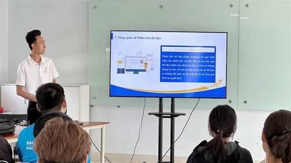

Membership and Benefits
Who Can Join
We welcome university students and individuals with a strong interest in data processing and software development. Whether you study technology or business analytics, you are eligible to become a member as long as you are dedicated to data-driven problem solving.
Why You Should Join
Participation provides direct exposure to practical technology projects. You will develop root-cause analysis skills, strengthen your algorithmic foundations, and build a technical portfolio for your career.
Our Activities
Weekly Events
- Analyze open-source data processing projects.
- Host workshops on network system architecture.
- Conduct weekly data mining technique reports.
- Review real-world incident troubleshooting case studies.
- Organize source code optimization assessments.

How to Join
- Fill out the online registration form with your background information.
- Attend a brief interview with the executive board to assess your current technical skills.
- Receive a confirmation email and attend the workflow orientation session.
Photo Gallery

A member presenting their data visualization project during our monthly showcase.
Pair programming session focusing on Python and machine learning libraries.
Celebrating the successful completion of our annual Hackathon event.